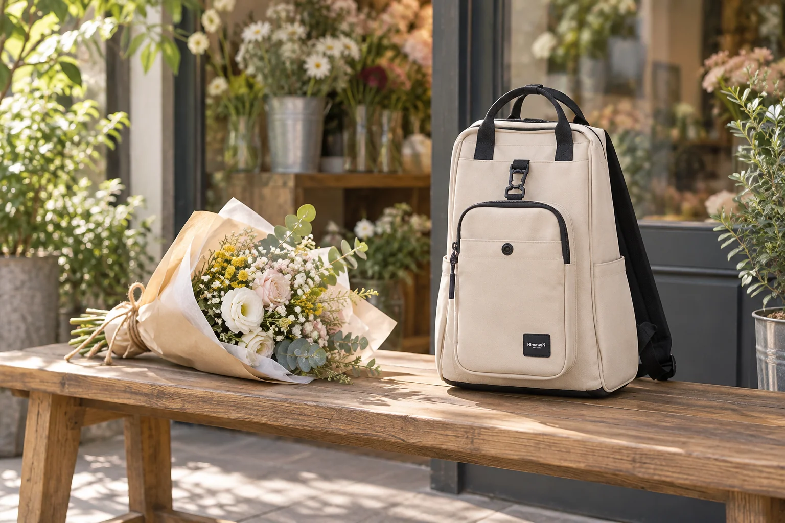

꽃다발을 든 날, 백팩이 맡을 역할

꽃집에서 꽃다발을 받아 나오는 순간 평소 외출과 다른 짐이 생깁니다. 한 손에는 포장을 잡고 다른 손으로 결제 수단이나 휴대전화를 찾게 됩니다. 꽃의 길이가 백팩 높이보다 짧다고 가방에 넣을 수 있다고 판단하기는 어렵습니다. 꽃과 포장에는 눌리지 않아야 할 면이 있고 잡을 위치도 따로 있습니다. 백팩은 개인 소지품을 담는 역할로 두고 꽃다발은 안내받은 형태를 유지해 운반하는 방법을 먼저 생각해볼 만합니다.
예약한 꽃다발을 찾기 전에는 꽃집에 운반 방법을 물어볼 수 있습니다. 걸어서 이동할지, 교통수단을 이용할지 알려주면 포장과 함께 확인할 부분을 구체적으로 이야기하기 쉽습니다. 줄기 끝이 어떻게 처리되어 있는지, 어디를 잡아야 하는지, 별도 운반용 가방이 필요한지 확인하세요. 꽃의 종류별 관리 방법은 받은 안내를 따르며, 집에 있는 종이나 봉투로 포장을 임의로 바꾸기 전에 필요한 조건부터 알아두면 됩니다.
꽃을 받기 전에 개인 짐 정리
꽃다발을 받은 뒤 지갑이 가방 깊은 곳에 있다는 사실을 알면 잠시 내려놓을 자리를 찾아야 합니다. 꽃집에서 쓸 결제 수단과 이동에 필요한 교통카드, 연락 도구는 출발 전에 위치를 확인할 수 있습니다. 필요한 물건을 모두 손에 꺼내두는 대신 하나씩 찾을 수 있는 닫힌 자리를 정하면 됩니다. 백팩을 몸 앞으로 가져와 열 때 꽃을 어느 손으로 들지까지 생각해보면 실제 동작을 판단하기 쉽습니다.
선물 카드가 있다면 꽃다발 포장에 포함되는지, 별도로 건넬지 정합니다. 별도 봉투를 사용한다면 물기가 있는 포장과 직접 닿지 않게 보관할 수 있습니다. 봉투가 가방 안의 책 밑에 깔리면 선물을 건네기 직전에 다시 짐을 꺼내게 되므로, 당시 사용할 순서를 기준으로 위치를 고릅니다. 카드에 적힌 개인적인 글을 이동 중 드러낼 필요가 없도록 봉투의 닫힘도 확인하면 됩니다.
꽃다발을 들고 이동하는 동안 Himawari No.0403 제품 정보의 베이지 모델 같은 개인 가방에는 선물 카드와 평소 소지품을 남겨두는 구성을 생각할 수 있습니다. 카드가 따로 있다면 꽃을 건네기 전에 바로 찾을 위치에 두고, 이동에 쓸 교통카드는 그와 구분합니다. 꽃집에서 받은 운반 안내는 꽃의 포장을 기준으로 따릅니다. 가방을 열 때 꽃을 내려놓아야 한다면 어디에서 멈춰 정리할지도 이동 순서에 포함하면 됩니다.

꽃집에서 다발을 받았으면 안내받은 잡는 위치에서 포장의 안정된 상태를 확인합니다. 리본이나 포장지를 손잡이처럼 사용할 수 있는지는 임의로 판단하지 않고 꽃집의 설명을 따릅니다. 꽃 머리가 주변 물건에 닿지 않도록 이동 방향의 공간을 보고, 출입문을 열거나 계단을 오를 때 다른 손에 무엇을 들고 있는지도 살펴보세요. 꽃을 손에 들었다고 계속 높은 위치로 올려 들기보다 주변 간격과 실제 포장을 기준으로 움직이면 됩니다.
앉거나 자리를 바꾸는 순간
잠시 앉을 때는 백팩을 먼저 안정된 위치에 두고 꽃다발이 눌리지 않을 자리를 확인합니다. 가방 위에 꽃을 얹으면 가방을 집는 동작에서 포장이 기울 수 있습니다. 각각 어디에 놓았는지 알 수 있고 다른 사람의 이동을 방해하지 않는 위치가 필요합니다. 사용할 수 있는 면이 좁다면 꽃집에서 안내한 운반 상태를 유지해 손에 들고 있을지, 다른 방법을 선택할지 판단해야 합니다.
사람이 많은 곳에서는 백팩을 돌리는 방향도 봅니다. 꽃을 앞으로 들고 있다고 뒤쪽의 가방까지 보이는 것은 아니므로 좁은 자리를 지나갈 때 주변 간격을 확인합니다. 지갑이나 휴대전화를 꺼낼 때는 멈춰 설 수 있는 곳에서 가방을 열고 필요한 물건만 찾습니다. 꽃 포장을 잠시 내려놓았다면 그 자리에 물기나 오염이 없는지도 살펴보세요. 이동 중 계속 같은 자세를 유지하려 하기보다 필요한 순간에 동작을 나누면 됩니다.
비가 오거나 다른 선물을 함께 들 날에는 관리할 짐이 더 늘어납니다. 우산과 꽃다발, 백팩을 한 손에 모으려 하면 물건마다 필요한 방향을 유지하기 어려울 수 있습니다. 꽃집에 별도 운반 포장을 문의하거나 이동 방식을 바꿀지 생각할 수 있습니다. 이 선택은 꽃다발의 크기와 포장, 실제 이동 구간에 따라 달라집니다. 가방 안에 넣어 손을 비우는 방법부터 정하기보다 포장 상태를 유지할 수 있는 방식이 있는지 먼저 봅니다.
건네기 직전과 그다음
약속 장소에 도착하면 포장이 풀린 부분이나 물기가 있는지 확인합니다. 리본이 느슨해졌다고 급히 모든 포장을 뜯어 다시 묶기보다 안내받은 구조를 보고 필요한 부분만 정리하세요. 꽃다발을 건넬 때 함께 전할 관리 설명이 있다면 꽃집에서 받은 내용을 기준으로 전달합니다. 꽃 이름이나 관리 방식을 정확히 모르면 짐작해 설명하지 않고 받은 안내를 함께 건네는 방법도 있습니다.
꽃을 건넨 뒤에는 손에 남은 운반 가방과 카드 봉투, 영수증이 있는지 봅니다. 꽃다발이 없어졌다는 이유로 나머지 물건도 정리되었다고 생각하면 빈 운반 가방을 자리에 두고 올 수 있습니다. 다시 사용할 물건은 챙기고, 필요 없는 포장재를 처리할 때는 장소의 안내를 따르세요. 돌아가는 길에는 개인 짐을 찾기 편한 상태로 백팩을 닫고 열쇠와 휴대전화의 위치를 확인하면 됩니다.
귀가 후에는 임시로 담은 종이와 포장재를 꺼냅니다. 꽃다발 포장의 물기가 가방에 닿았다면 제품 관리 표시를 보고 상태에 맞게 정리합니다. 다음에 꽃을 선물할 때 참고할 것은 가방의 여유보다 어느 구간에서 꽃을 내려놓아야 했는지입니다. 결제할 때였는지, 교통카드를 찾을 때였는지를 알면 개인 물건의 위치를 바꿀 수 있습니다. 운반용 포장이 필요한 일정이라면 다음 예약 때 그 이동 방식부터 꽃집에 알려주면 됩니다.